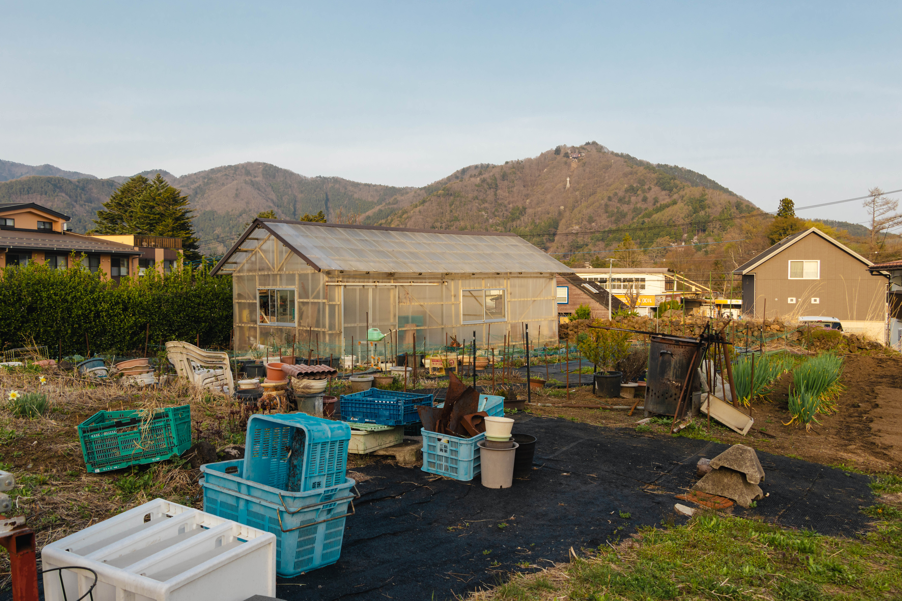

梁凯轶
建筑师 · 摄影师 · 内容创作者
我热衷于探索人与空间的互动，无论是通过砖石构建实体，还是通过镜头捕捉光影。从重庆到米兰与斯德哥尔摩，我致力于在理性逻辑与感性审美之间寻找平衡。

教育背景
意大利米兰理工大学 (Polimi)
建筑环境管理 硕士 2026-2028
MSc. Management of Built Environment 2026-2028
重庆大学
建筑学 学士 2021-2026

实践经历
CLAB合造社
2025.10 - 2026.01 建筑实习生
日本NOT A HOTEL竞赛、伊宁市超级石榴商业策划
IDO元象建筑
2024.03 - 05 建筑实习生
宜宾高新区三中(中标)、万科观音桥实验住宅
gad绿城设计
2024.07 - 08 建筑实习生
成都饮马川温泉酒店、珠海城市之心
荣誉奖项
- 2024 中国人居环境设计学年奖 银奖
- 2024 重庆市风景园林学会竞赛 一等奖
- 2022 重庆大学建造季 一等奖
项目地图
从重庆的山城巷弄，到北欧的冰川与日本的离岛。 这些黑点标记了我的思考与实践在地球表面的坐标。
In Their Eyes
项目名称
天津三岔河口混龄健康社区
设计时间
2026.03-05
项目地点
中国天津市红桥区三岔河口
功能类型
居住、办公、城市设计
项目面积
54210㎡
容积率
1.3
绿地率
40%
设计人员
梁凯轶，张博宣，王政焯
本项目"In Their Eyes"是大健康建筑多校联合毕业设计，由梁凯轶、张博宣、王政焯三位同学共同完成。选取位于天津市三岔河口区域，基地位于红桥区和河北区交界处，海河、北运河和南运河在此交汇，整个城市的形态自河口孕育、生长、成型，独特的地理位置造就了基地复杂、多元的城市空间景观。
传统养老院往往只将老人视为需要被隔离照护的客体，忽视了老年人作为"活生生的人"的其他需求。本设计通过视线场景的引导设计，构建一个让老人感受到安全平等、有归属感的、氛围和睦的适老混龄社区。核心理念可归纳为三个关键词：共同聚焦（与社区人群共同聚焦）、余光守护（余光感知到彼此存在）、社区焦点网络（居委会、活动室、阅览室、社区市场均设于此，全年老年人皆可在此阅读、社交）。
基于视线场景模型，我们析出老年人的心理需求：平等感（面对面平视交流）、参与感（与社区人群共同聚焦）、安全感（看见熟悉的人或事物）、陪伴（余光感知到彼此存在）、承担社会责任（老年人依然能承担社区长辈的角色）、自我价值实现（老人的成就或能力得到认可）。
总体规划包含八大功能组团：河畔商业、老年公寓、创意聚落、社区公园、活力运动、社区医院、静养院落、社区中心，通过"社区焦点网络"将各功能有机联合。房型设计方面，共设计了8种房型，其中老人房型5种（含失能老人病房），青年公寓3种。
创新特色体现在三个方面：视线导向设计——以"视线"作为人与空间的核心媒介，通过建筑布局和房型设计创造自发的视线交流；混龄社区模式——打破传统养老院的隔离模式，创造代际共融的生活场景；适老化产业嵌入——配置适老化产品开发空间、养老院样板间和混居公寓，形成可持续的社区运营模式。
山海の間
项目名称
NOT A HOTEL 屋久岛酒店设计
设计时间
2025.11-12
项目地点
日本屋久岛尾之间 Onoaida, Yakushima, Japan
功能类型
居住、酒店、住宅
项目面积
285㎡
设计人员
梁凯轶，徐浪，李健，丁博潮
该项目充分利用场地的自然景观优势，旨在为长期居住的客人提供了一种非凡的居住体验。酒店南面广阔无垠的太平洋，北靠高耸的山峰，享有双重景观。建筑顺应缓坡地形，低矮地嵌入树林之中。以当地可持续木材和暖色调混凝土作为主要材料，这些材料能够随时间风化并与森林色调融为一体。整个建筑遵循“居住于自然之中”的准则，让景观穿过建筑，成为日常生活的一部分。
从停车场出发，沿着一段楼梯向上即可到达位于二层的建筑入口，并直接进入被森林环绕三面的公共起居空间。客厅朝西，面向一个用于日常户外活动和放松的草坪与灌木庭院。从客厅向上几步，客人便来到客房平台，朝北的公共阳台立即呈现出高耸山峰的壮丽景色。继续前行，厨房、餐厅和茶室占据了东侧的空间，而客房则位于南侧，其视野越过树梢，可欣赏到广阔的海景。
建筑主体被抬离地面，为温泉和桑拿让出整个底层空间。每个房间内的旋转楼梯直接将客人带到南翼的私人浴室；每个浴缸都面向郁郁葱葱的亚热带森林。北侧两个公共浴池面向不同的景观。格状分布的浴池如同水田一般躺在建筑下方，室内外融为一体，沐浴者能够放松身心，充分感受原始森林的自然之美。
City Ends, Nature Begins.
项目名称
湿地观鸟点设计
设计时间
2025.10-11
项目地点
冰岛东部区都皮沃古尔 Djúpivogur, Austurland, Iceland
功能类型
公共、观景
项目面积
894㎡
设计人员
梁凯轶
每年8-9月，冰岛赫马岛上都有大量的海鹦幼鸟在出巢后被附近的人工光源吸引，本该循着月光飞向大海的它们散落迷失在城市里。由此，当地居民组建志愿海鹦救援队，在夜间巡逻收集迷路幼鸟，并于次日清晨放归海洋。这似乎是一种善举，但同时也是为自身对自然造成负面影响的一种修正弥补或是救赎。人们应该知道自然本该是怎样。
项目选址于冰岛东南沿海的Djúpivogur小镇，设计了一系列连接性的空间系统。其中材料、光线、风、湿度和声音以经过校准的序列递进，将抽象的边界转化为一系列可感知的空间状态。从完全受控的人工环境，到逐渐暴露于自然并受其支配的空间，人工与自然的边界在空间序列中被揭示、模糊并重新诠释。
人与自然的分界并非静态的隔离，而是一个连续、可感知且不断变化的界面，让人们以更清晰和谦逊的态度去理解这一边界。
Journey to the Sea
项目名称
长崎大三东车站改造
设计时间
2025.06-09
项目地点
日本长崎大三东 Omisaki, Ngasaki, Japan
功能类型
公共、文化、交通
项目面积
1500㎡
设计人员
梁凯轶
车站不仅是独特的空间形态，更是承载人们相遇与离别、感伤与欣喜等情绪的代名词。在日本长崎大三东，曾作为静谧海边站台与社区隔阂的铁路车站，其稀疏的列车与恒常的潮汐形成对比。本项目旨在将车站重塑为连接日常生活与海岸的通道。居民可穿行于遮荫走廊与共享庭院，商业与社交活动自然延伸至站内；无列车时，站台则化为聚集休憩的舞台，阶梯式观景平台更将视线引向辽阔海面。
站台下方，图书馆与展览厅嵌于轨道之下，八米高的玻璃幕墙将潮汐涨落尽收眼底。更下方，潮水退去时会浮现出一条滨海步道，邀请人们漫步、驻足、触摸海水。通过社区—车站—海洋这一层层递进的旅程，该项目将隔阂转化为连接，将车站转变为通往自然的门户，以及一个承载记忆、生活与想象的共享之地。
Crossing Bustle 2.0
项目名称
春森路社区
设计时间
2025.03-06
项目地点
中国重庆市渝中区春森路
功能类型
居住、商业
项目面积
25480㎡
设计人员
梁凯轶
春森路社区位于中国重庆上清寺片区，是一个典型的高容积率、高密度开发的老旧居住区。长期以来，该社区饱受交通循环不畅、空间封闭、绿化不足、公共空间匮乏等问题困扰。
我们通过道路系统和公共商业空间重建邻里连接，提升街道活力、增强视觉通透性、改善夜间照明，消除治安盲区。引入开放式街区理念将有助于填充灰色与消极的城市空间，优化社区环境，实现凝聚、和谐的城市生活。
Childhood in Neighborhood
项目名称
磁器口幼儿园设计
设计时间
2024.10-2025.03
项目地点
中国重庆市沙坪坝区磁器口
功能类型
教育
项目面积
3245㎡
设计人员
梁凯轶
本项目位于重庆磁器口片区，以"非正式学习空间"为核心概念，突破传统功能布局的束缚，通过儿童日常活动创造多元化的学习环境，促进其自主发展。 磁器口住宅建筑前的半公共空间呈现出独特的空间逻辑。居民常以盆栽、家具等界定这些区域，形成半私密空间，儿童在其中嬉戏玩耍，被逐渐培养起社交能力与探索精神。
幼儿园的空间设计从磁器口的城市肌理中汲取灵感，运用类型学理论将非正式学习空间融入校园各处。通过提取半公共空间的典型特征——空间尺度、模糊边界与功能复合性——重新诠释走廊、公共休息区、植物温室、微地形及游乐设施等空间。这些空间精心契合儿童发展需求，构建出一个沉浸式的成长乐园，让学习在日常探索中自然发生。
Corridor Pavilion 回廊亭
项目名称
土湾社区咖啡店
设计时间
2025.06
项目地点
中国重庆市沙坪坝区土湾社区
功能类型
商业、公共
项目面积
92㎡
设计人员
梁凯轶，詹桑绮
项目位于重庆土湾社区人流密集的三岔路口，原本是一片无人使用的野生草地。我们以1.2米为模数在此搭建一个轻盈的回廊亭，用高透阳光板开启扇对局部空间进行围合，以适应不同季节的运营需求。
建筑之外，不同的外摆家具散落在草地景观之间，人们在此下棋、喝茶、咖啡或是纳凉。街道办也可在此定期组织观影活动，丰富居民的社区生活。
CONNECTION
项目名称
鸽牌电缆厂地块城市设计
设计时间
2025.04-06
项目地点
中国重庆市沙坪坝区鸽牌电缆厂地块
功能类型
办公、居住、商业、文化
项目面积
182000㎡
规划用地面积
2640000㎡
设计人员
梁凯轶，魏毅诚，刘桐昊
项目场地位于重庆市沙坪坝区滨江区域，场地内高差较大，高家花园大桥与轨道大桥穿过场地。场地的核心问题为确实文化的断联， 场地西北邻千年古镇磁器口，东南邻高等学府重庆大学。因此项目旨在形成连续的文化空间，并为未来的青年创意从业者的生活模式提出构想，将各个主题的功能区域通过"塔群与廊桥"进行交通和文化两重意义上的连接，六座主题塔分别承载学术、创意与传统工艺等等，通过天际廊道将高等学府与磁器口古镇无缝衔接。廊桥沿线设计半开放节点，配备可移动展示与互动装置，为匠人与师生提供工作坊、展演与沙龙空间。场地中心的自来水厂改造为艺术馆与运动场所，形成新的场地的核心，通过屋顶架空的跑道将所有塔的廊道进行整合，强调场地的公共性和中心性
Tranquil Vitality 平热日常
项目名称
重庆大学虎溪学生活动中心
设计时间
2025.02-04
项目地点
中国重庆市沙坪坝区重庆大学D区
功能类型
公共、文化、办公
项目面积
11900㎡
设计人员
梁凯轶，陈群颖，魏毅诚
项目位于重庆大学虎溪校区，包含校园剧院和学生活动中心。设计尊重现有场地，通过运用柱廊和实体体量营造出宁静沉稳的氛围。同时，开放的流通路径和半透明的界面保持了日常校园生活的活力。该建筑不仅是功能空间，也是文化和社会交流的重要枢纽。
该场地位于校园的重要节点。建筑后退形成草坪广场，供学生聚集和休憩。建筑由三个功能不同的体块组成， 高度依次降低以呼应其后的小山丘。这些体块通过层层叠叠的板状屋顶相连，形成和谐的视觉联系。剧院的内部设计经过了精心且全面的考量。主剧场设有 1200 个座位，其中900 个位于正厅，300 个位于楼座，而较小的剧场则可容纳 500 个座位。
Bylake
项目名称
成都骑龙公园竞赛 书店 / 驿站
设计时间
2024.12
项目地点
成都高新区骑龙公园
功能类型
公共
项目面积
745㎡（书店）+225㎡（驿站）
设计人员
梁凯轶，郭裕炀，刘昱辰，侯竹筠，李思瑾，吕璐瑶
书店选址在湖畔水陆之间，与美丽的湖景有着紧密的联系。我们想象建筑是一个兼具公共性与私密性的观景器，嵌在岸边的泥土里。人们通过这座建筑能以多种方式与湖水产生五感的互动。它不仅仅是一个书店，更是骑龙公园的中心。
功能上，由两层主要的阅读空间、一个沙龙空间、一个小的水吧休息空间以及配套的下沉庭院和亲水平台组成，并配有一个独立的卫生间。依据每个空间功能需求的不同，来设定空间和环境的具体的关系。我们首先将场地地坪整体下挖了1.5米，在西侧入口处形成一个公共的下沉院落，同时将首层界面往陆地方向退让，让湖水延伸进屋檐下，模糊建筑与自然的边界。
在一层，两侧的片墙将人们的视线引向湖面，所有人都可以安静地坐在落地窗前阅读，室外的人们也可以通过透明的空间间接观赏到湖景。这一层主要承担了书店的陈列与零售的功能。二层的空间则显得更为安静私密，以阅读和自习为主。倾斜的屋顶向湖水压低，长窗的位置恰好匹配人们坐下后视线的高度，提供一个专属的观湖窗口。而另一侧的墙面仅在上部设置了高窗，以遮挡强烈的西晒。
沙龙空间位于二层的北端。锯齿屋顶提供了较为均质的明亮光线，更有利于如讲座、签售会这样的小型活动的开展。楼下的水吧和亲水平台与西侧的下沉庭院互相交织，共同构成了这个公园最核心的社交场所。鸟语花香、绿树成荫，人们在树影斑驳的院子里悠闲地品茶、聊天，享受轻松的休闲时光。这其实是成都人习以为常的安逸生活方式。我们认为在都市的新兴地带，传统的城市文化与场所精神也应该被有效继承延续。而此类社交场景设计，则完美呼应了这一生活传统。
另一座建筑则是露营地旁的公园驿站。我们将地块用4m×4m的均质柱网划分，在其中置入公共卫生间和服务于露营场地的充电站与便利店，并退让出朝南的部分形成开放的灰空间。网格化的布局让每个功能区域都有明确的界定，便于运营管理和日常使用。
此外，模块化装配式的木结构在建造过程中起到降本增效的作用。全过程干作业也展现出最大程度的环境友好。
BREATH
项目名称
铜元局超高层办公项目
设计时间
2024.11-12
项目地点
中国重庆市南岸区铜元局
功能类型
办公、商业
项目面积
89651㎡
建筑高度
145m
设计人员
梁凯轶，魏毅诚
项目位于重庆铜元局的临江地块上，旨在为该地区提供一个富有活力的区域中心，包含企业孵化办公、艺术非标商业以及商务酒店配套。场地东南侧的电厂宿舍旧址与西北侧的路口连接形成了一条热点轴线，而与之垂直的恰好是指向渝中半岛的城市景观轴线。由此，建筑被扭转了51度，并在底部形成了丰富的街巷商业空间、露台，以及一个大型的集会广场。这为周围社区的人们提供了曾经缺失的生活目的地。
塔楼被置于地块东北角，以保证其良好的景观视野，以及底部商业的光照。在这一环节，我们希望尽可能地创造宜人的办公环境与工作氛围。塔楼高145米，设有高低两个避难层。在其下一层，我们设置了公共活动的楼层，以及几个室外露台。但相对集中化的休憩空间对于多数上班的人们而言并没有太多的日常适用性。因此，在这两层公区楼层外，办公区域的每一层都拥有两个大阳台，以供人们放松、交谈、吸烟或是独处。
How Silos Encore ?
项目名称
四川遂宁混凝土搅拌站商业改造
设计时间
2024.04-06
项目地点
中国四川省遂宁市
功能类型
商业
设计人员
梁凯轶，魏毅诚
四川遂宁西北侧的城郊山坡上，有一座已荒废的、由三层台地组成的混凝土搅拌站。
设计保留了搅拌站完整的工业构筑形态，利用高差形成层叠的空间结构。方案将底层改造为商业餐饮区，中层设置展演空间与共享办公，顶层保留原料储备的功能并设置为开放的观景平台。
设计通过置入一系列新的功能体块，在保留历史构筑物的基础上，创造新的城市活力。